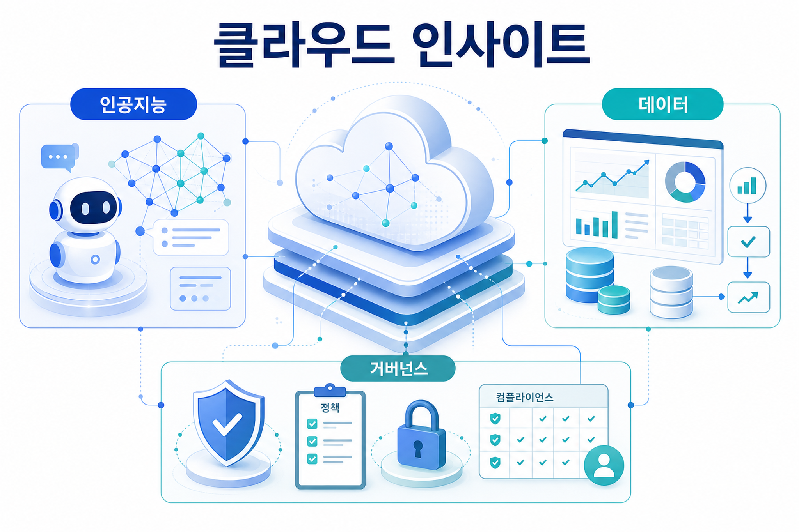
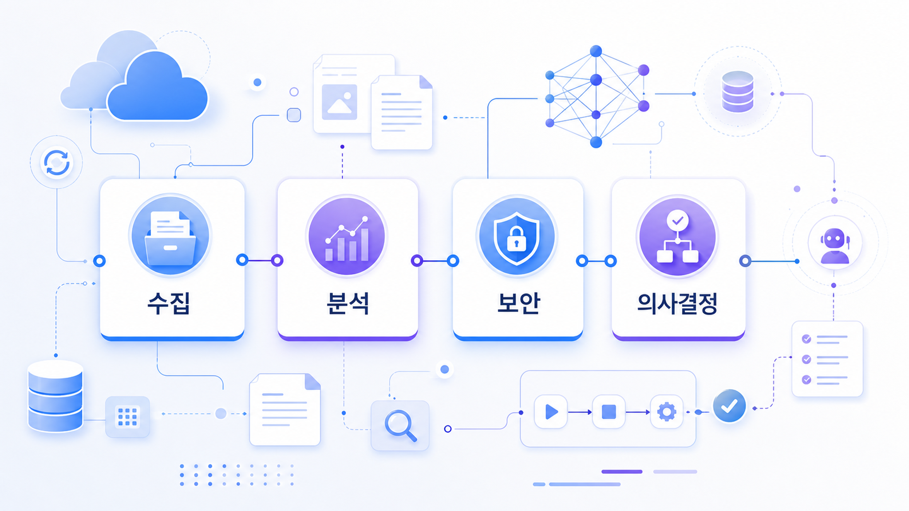
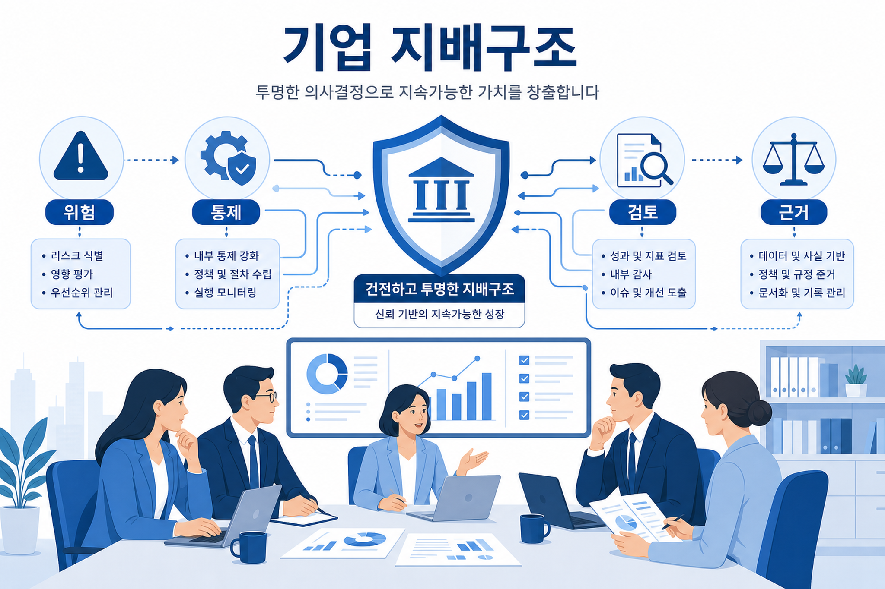

의뢰자가 가장 어려워하는 단계를 AI로: Strands SDK를 활용한 라우드소싱의 공모전 브리핑 에이전트 구축기
의뢰자가 가장 어려워하는 단계를 AI로: Strands SDK를 활용한 라우드소싱의 공모전 브리핑 에이전트 구축기 by Yoonseo Kim on 29 6월 2026 in Amazon Bedrock AgentCore , Artificial Intelligence , Strands Agents Permalink Share
원문 확인공식 블로그 기반 일일 인사이트
이번 실행에서 새로 저장·동기화된 AWS 블로그 항목을 기준으로 기술 변화 신호를 읽었습니다. 수집 시각은 2026-06-29 12:58:26 KST입니다.
코리아 기술 블로그, 뉴스 블로그, 머신러닝 블로그를 확인했습니다.
신규·보조 분석 입력: 1건

공식 블로그 수집 데이터를 바탕으로 재구성한 오늘의 핵심 흐름입니다.
공식 피드 3개를 확인하고 중복 URL, 콘텐츠 해시, 정규화 제목을 기준으로 신규 여부를 판단했습니다.
관찰된 항목은 인공지능 에이전트, 데이터 활용, 보안·거버넌스, 모델 학습 최적화 관점에서 검토했습니다.
시사점은 관찰된 사실, 근거 출처 URL, 기업 의사결정 시 고려할 기회와 위험 순서로 정리했습니다.
이번 실행에서 새로 저장·동기화된 AWS 블로그 항목을 기준으로 기술 변화 신호를 읽었습니다.
의뢰자가 가장 어려워하는 단계를 AI로: Strands SDK를 활용한 라우드소싱의 공모전 브리핑 에이전트 구축기 by Yoonseo Kim on 29 6월 2026 in Amazon Bedrock AgentCore , Artificial Intelligence , Strands Agents Permalink Share
원문 확인
수집·분석·보안·의사결정 흐름을 요약한 시각 자료입니다.
| 관찰 영역 | 근거 | 기업 검토 포인트 |
|---|---|---|
| 인공지능 에이전트와 업무 자동화 | 수집 항목의 서비스·기술 키워드와 원문 요약 | 데이터 접근 권한, 감사 가능성, 비용 책임 경계를 먼저 확인해야 합니다. |
| 데이터 기반 의사결정 | 문서 처리, 분석, 지식 기반 관련 항목 | 정확도, 최신성, 민감정보 처리 기준을 원문과 서비스 문서로 검증해야 합니다. |
| 보안과 거버넌스 | 보안·가드레일·격리·컴플라이언스 관련 신호 | 중앙 정책, 계정 경계, 로그 보존, 사고 대응 책임을 설계 단계에서 검토해야 합니다. |
한국 기업은 공식 블로그가 제시하는 서비스 업데이트를 바로 도입 결론으로 해석하기보다, 산업별 규제, 개인정보 처리, 기존 클라우드 표준, 비용 승인 체계와 함께 검토해야 합니다. 이번 실행 데이터만으로 특정 내부 조직이나 제안 전략에 연결할 근거는 확인되지 않았습니다.
수집된 공식 URL과 저장된 원문 Markdown을 기준으로 적용 후보를 선별합니다.
성능, 보안, 비용, 데이터 통제를 같은 기준표로 확인합니다.
서비스가 제공하는 자동화 범위와 기업 내부 책임 범위를 분리해 봅니다.

위험, 통제, 검토, 근거를 중심으로 한 거버넌스 관점입니다.
의뢰자가 가장 어려워하는 단계를 AI로: Strands SDK를 활용한 라우드소싱의 공모전 브리핑 에이전트 구축기 by Yoonseo Kim on 29 6월 2026 in Amazon Bedrock AgentCore , Artificial Intelligence , Strands Agents Permalink Share
https://aws.amazon.com/ko/blogs/tech/stunning-briefing-agent-on-aws/
관찰된 AWS 블로그 내용만 기준으로 보면, 기업 의사결정자는 관련 서비스의 적용 범위, 데이터/보안 통제, 비용 및 운영 책임 경계를 원문과 공식 문서로 추가 확인할 필요가 있습니다.